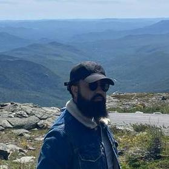

Muhammad Zaheer Hashmi
Email: zaheerhashmim@gmail.com | Phone: +16477867831 | LinkedIn:linkedin.com/in/mzaheerhashmi/
| Github: github.com/zaheerhashmi

Summary
A Computer Engineering Graduate from the University of Toronto looking for roles in Web Development, IT and Data Science.
Education
Bachelors of Applied Science in Computer Engineering, Minor in Artificial Intelligence - University of Toronto (June 2024)
- Coursework: Data Structures and Algorithms, Operating System, Software Engineering, Computer Networks I, Introduction to Artificial Intelligence, Introduction to Applied Deep Learning, Introduction to Databases, Introduction to Machine Learning
Work Experience
Database Developer - CANSSI Ontario, Toronto, ON (Jun 2023 – Aug 2023)
- Designed and developed a FileMaker-based application tailored to enter, and analyze data related to CANSSI
Ontario's operations, events, and programs
- Collected raw data from Eventbrite and restructured it in MS EXCEL
- Implemented the Crow's Foot diagram technique in FileMaker for database normalization, ensuring efficient data
organization and relational integrity
Projects
-
UofT Meets
A full stack app made with Flask and Bootstrap for event creation, management, and communication at UofT
- Functioned as a backend developer in a team of seven, designing the front and backend of an events search bar
- Utilized Flask and SQLAlchemy in the creation of a robust filtering mechanism, improving the efficiency and responsiveness of the event discovery process
- Developed user and system level requirements documentations as part of the agile development methodology used in the project
Mergesharp
A comprehensive library implementing Conflict-free Replicated Data Types (CRDTs) for distributed systems, enabling conflict-free data synchronization and real-time collaboration across decentralized applications
- Designed and developed test cases using the xnit testing framework for both functionality and performance
- Led the research and development of CRDTs, implementing unit tests and core functionalities for grow-only sets, 2-phase graphs, and mutable strings using .NET, enhancing the library's capability to manage concurrent data updates and resolve conflicts efficiently
Diabetic Retinopathy Detection
A Deep Learning CNN designed by a team of three to classify images for Diabetic Retinopathy thereby aiding medical professionals
- Implemented and optimized data preprocessing pipelines for a Diabetic Retinopathy Detection project, utilizing Pandas. Developed functions for dynamic image resizing, padding, and class-specific organization, enhancing model training efficiency and accuracy on a dataset of retinal images
- Designed and applied data augmentation techniques using torchvision transforms, including random vertical flips, color jitter, and normalization to improve model generalizability. Successfully managed and prepared large-scale datasets for neural network training, demonstrating expertise in handling and analyzing medical imaging data
Skills
- Languages: C, C++, JavaScript/Typescript, Python, SQL, C#
- Frameworks / Libraries: NumPy, Pandas, Sci-Kit Learn, Matplotlib, Flask, PyTorch, PyTest, Bootstrap
- Databases: MySQL, SQLite, PostgreSQL
- Other: Git, Docker, NodeJS, LATEX, HTML, CSS
Other